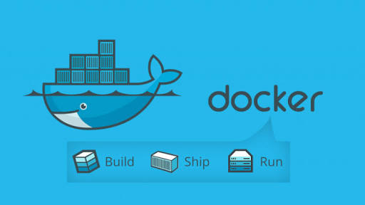
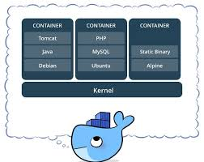
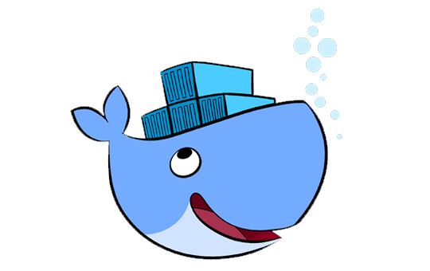

En los últimos años los contenedores Linux se han convertido en una herramienta primordial para los desarrolladores, si bien, las máquinas virtuales nos permiten trabajar con distintos SO, muchas veces, cuando los recursos de memoria son escasos, no se puede trabajar tan fluidamente con estas.
Es aquí donde entraron a tallar los contenedores, los cuales los podemos definir de manera sencilla como maquinas virtuales ligeras(tener en cuenta que no son exactamente eso), uno de estos contenedores es Docker.
¿Qué es Docker?
Docker es un proyecto de código abierto hecho en Go que automatiza el despliegue de aplicaciones dentro de contenedores de software, proporcionando una capa adicional de abstracción y automatización de Virtualización a nivel de sistema operativo en Linux.
Utiliza características de aislamiento de recursos del kernel Linux, tales como cgroups y espacios de nombres (namespaces) para permitir que "contenedores" independientes se ejecuten dentro de una sola instancia de Linux, evitando la sobrecarga de iniciar y mantener máquinas virtuales.
La definición parece no entenderse muy bien si no sabes los conceptos que allí se mencionan, explicado un poco mas simple,Docker nos permite crear contenedores de manera sencilla y rápida, logrando asi ahorrar hardware si es que no contamos con un ordenador potente, además de que el empaquetado del programa es mucho mas liviano siendo muy sencillo de enviar.
Los contenedores tienen 3 características principales: Portabilidad, Ligereza y Autosuficiencia
Portabilidad
El contenedor Docker lo podremos desplegar en cualquier otro sistema (MAC,Windows o Linux), con lo que nos ahorraremos el tener que instalar en este nuevo entorno todas aquellas aplicaciones que normalmente usemos.
Ligereza
El peso de este sistema no tiene comparación con cualquier otro sistema de virtualización más convencional que estemos acostumbrados a usar. Por ejemplo, una de las herramientas de virtualización más extendida es VirtualBox, y cualquier imagen de Ubuntu que queramos usar en otro equipo pesará entorno a 1Gb si contamos únicamente con la instalación limpia del sistema. En cambio, un Ubuntu con Apache y una aplicación web, pesa alrededor de 180Mb, lo que nos demuestra un significativo ahorro a la hora de almacenar diversos contenedores que podamos desplegar con posterioridad.
Autosuficiencia
Un contenedor Docker no contiene todo un SO completo, sino únicamente aquellas librerías, archivos y configuraciones necesarias para desplegar las funcionalidades que contenga. Asimismo, Docker se encarga de la gestión del contenedor y de las aplicaciones de este.
Nos ofrece un entorno similar a Git para, a base de "capas", controlar cada cambio que se haga en la máquina virtual o contenedor.
Para obtener esta fluidez Docker extiende LXC (LinuX Containers), un sistema de virtualización ligero que permite crear múltiples sistemas totalmente aislados entre si sobre la misma máquina o sistema. Logra todo esto gracias, como se mencionó, a que no emula todo un sistema operativo completo.
Ademas, Docker esta compuesto por tres elementos fundamentales:
Contenedores Docker
Son como un directorio, contienen todo lo necesario para que una aplicación pueda funcionar sin necesidad de acceder a un repositorio externo al contenedor.
Imágenes Docker
De manera sencilla son SO con aplicaciones instaladas, las cuales se pueden usar como base para instalar mas dependencias. Claro está que estas imagenes son ligeras.
Repositorios Docker
También conocidos como Registros Docker, contienen imágenes creadas por los usuarios y puestas a disposición del público. Puedes encontrar repositorios públicos y totalmente gratuitos o repositorios privados donde tendrás que comprar las imágenes que necesitarás.
Además te dejamos el vídeo que hicimos explicando de manera sencilla a que nos referimos con Docker y los contenedores y el link a su web oficial.